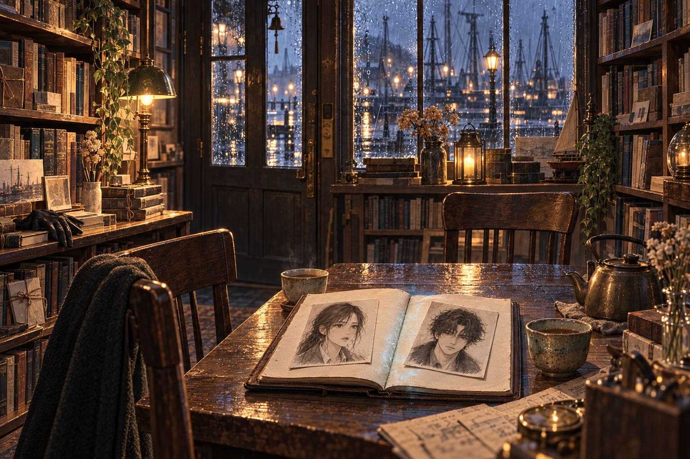

서하윤은 자기 필체로 적힌 주소를 세 번 지나쳤다.
열아홉 번째 부두. 회항서점. 문이 잠겨 있으면 세게 두드릴 것.
마지막 문장 아래에는 작은 글씨가 붙어 있었다. 주인은 귀가 멀쩡하다. 잠이 많다.
부두 끝에 서점이 있었다. 가스등을 단 건물들 사이에서 그 집만 창틀에 노란 전구를 걸어 놓았다. 유리 안쪽에 김이 서려 책보다 주전자가 먼저 보였다. 하윤은 젖은 수첩을 외투 안에 넣고 문을 두드렸다. 대답이 없었다. 문장을 믿고 주먹으로 쳤다.
안에서 의자가 넘어졌다.
문을 연 남자는 검은 외투를 입고 있었다. 목깃 아래 단추를 잘못 잠갔고, 왼손에는 빵을 쥐고 있었다. 그가 하윤을 보자 빵 부스러기가 바닥에 떨어졌다.
“돌아왔네.”
그 말 때문에 하윤은 들어갈 수 없었다. 항구에서 눈을 뜬 뒤 자기 이름을 말해 준 사람은 없었다. 외투 안주머니의 면허증으로 이름을 알았고, 오늘이 무슨 날인지는 신문으로 알았다. 기억 속 마지막 가을에서 열한 달이 지나 있었다. 부두의 바람은 이제 서늘해지고 있었다.
“저를…… 아세요?”
남자가 문손잡이에서 손을 떼었다.
“얼마나 기억하지?”
하윤은 한 발 물러났다.
“먼저 이름을 말하는 쪽이 예의라고 배웠는데요.”
“권태오.”
“제게 빚졌어요?”
“그런 셈이지.”
“그럼 안 잊는 편이 좋았겠네요.”
그가 웃으려다 그만두었다. 하윤은 그 얼굴을 보고 더 경계했다. 사람을 잊은 뒤에 상대만 웃지 못하는 일은, 돈을 잊은 것보다 귀찮을 것 같았다.
서점 안에는 수선한 책과 주인을 기다리는 물건이 섞여 있었다. 찻잔, 유리 건판, 한 짝짜리 장갑. 탁자에는 빈 의자 두 개가 마주 놓였고 태오는 문 가까운 자리를 하윤에게 내주었다. 하윤은 앉지 않고 수첩을 펼쳤다.

중간 장에 두 사람의 초상이 있었다. 태오는 지금보다 덜 피곤했고, 그림 속 하윤은 그의 외투에 빵을 숨기며 웃고 있었다. 아래에 자기 글씨가 보였다.
그는 자기가 숨긴 걸 잘 못 찾는다.
하윤이 종이를 만지자 손톱 밑에서 푸른 빛이 번졌다. 짧은 웃음이 귀 옆을 지나갔다. 젖은 종이에서 소금을 핥은 맛이 났다. 그녀는 손을 뗐다. 익숙한 기술이었다. 사물에 남은 순간을 읽는 일. 그러나 웃음의 주인은 자기인데 웃은 까닭을 알 수 없었다.
태오가 검은 장갑을 끼었다.
“오늘은 읽지 마.”
“제 수첩인데요.”
그때 창문에 태오의 얼굴이 비쳤다. 유리 속 입이 실제 입보다 먼저 움직였다.
이번엔 누구의 기억을 지울까?
창문에 검은 균열이 번졌다. 안쪽에서 보랏빛이 새어 나왔다. 태오가 등잔을 넘어뜨려 천으로 덮었다. 불이 줄자 유리 속 얼굴도 가라앉았다.
하윤은 수첩을 품고 문으로 갔다. 밖에서 종이 울렸다. 회색 제복을 입은 사람이 현관 유리에 봉인지를 붙이고 있었다.
“시민기록청입니다. 문을 여십시오.”
태오가 하윤 앞을 막았다. 그녀는 그의 팔을 밀어냈다.
“제가 열어요.”
제복의 남자는 젖은 모자를 벗었다. 그는 탁자 위에 황동 회중시계를 내려놓고, 돌아서서 문을 잠갔다. 시계 뚜껑에 하윤과 같은 성이 새겨져 있지는 않았다. 그래도 그 물건은 그녀의 손 안에서 떨었다.
제복 남자가 접은 서류를 내밀었다.
“서하윤 씨. 내일 정오부로 귀하는 사망 처리됩니다.”
하윤은 종이를 받지 않았다.
“죽는 시간을 알려 주는 서비스도 하나요?”
“몸에 관한 통지가 아닙니다. 시민 인장, 거주권, 통행권이 소멸합니다.”
“말을 바꾸니까 다정해졌네요.”
회중시계 안에서 남자의 목소리가 났다.
그 사람을 안으로 들이지 마.
하윤이 제복 남자를 보았다. 그는 그 말을 듣고 시계보다 먼저 문을 보았다.
문밖에 남아 있던 다른 제복이 봉인지 위에 두 번째 도장을 찍었다. 오른쪽 눈썹에 흉터가 있는 경비였다.
“확인만 하시오. 데리고 나오면 그 사람 인장은 돌려주겠소.”
경비가 유리를 두드렸다. 제복 남자의 손이 시계를 덮었다. 이 문 안에 들여보낸 사람과 밖에서 기다리는 사람은 한패처럼 보였으나, 문 안의 남자만 떨고 있었다.